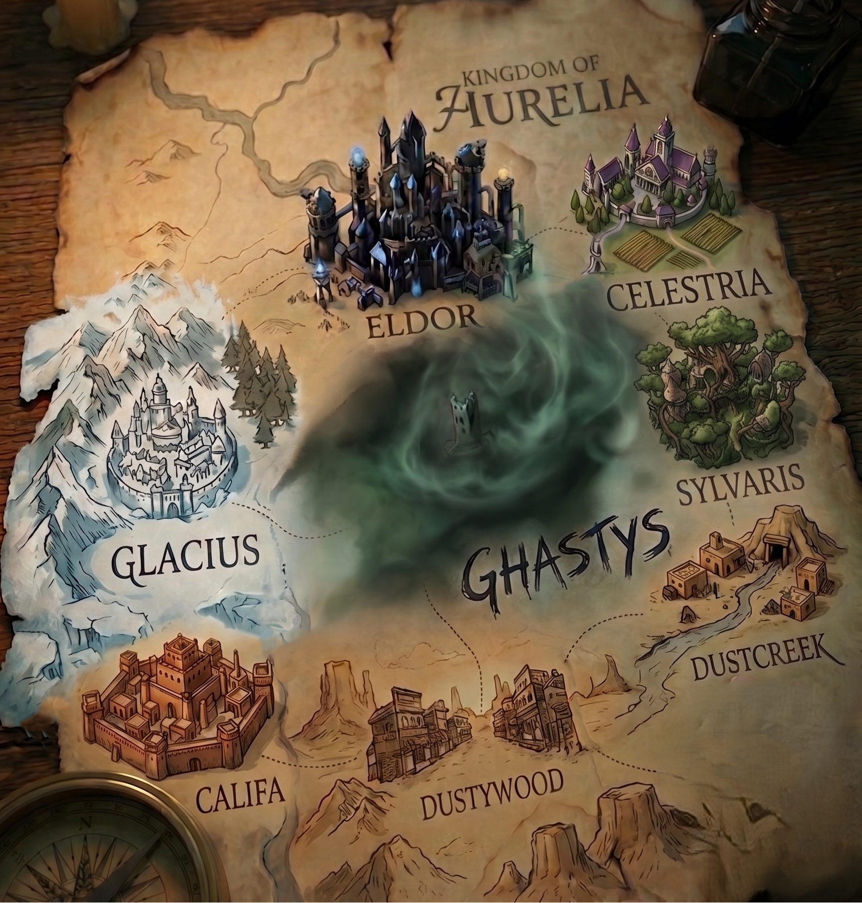

Um reino, muitas cicatrizes
Escolha uma cidade no mapa
Entre pelas fronteiras de Aurelia e acompanhe cada saga em uma versão contínua, textual e organizada em capítulos.

Um reino, muitas cicatrizes
Entre pelas fronteiras de Aurelia e acompanhe cada saga em uma versão contínua, textual e organizada em capítulos.
